Community
AI in Software Testing: Opportunity or Threat for QA Professionals?
Will AI replace software testers? Why AI is better seen as a powerful assistant than a threat for QA professionals.
Read moreAnnouncements, speakers and sessions, voices from the testing community and press coverage, from 2016 to today.
Will AI replace software testers? Why AI is better seen as a powerful assistant than a threat for QA professionals.
Read more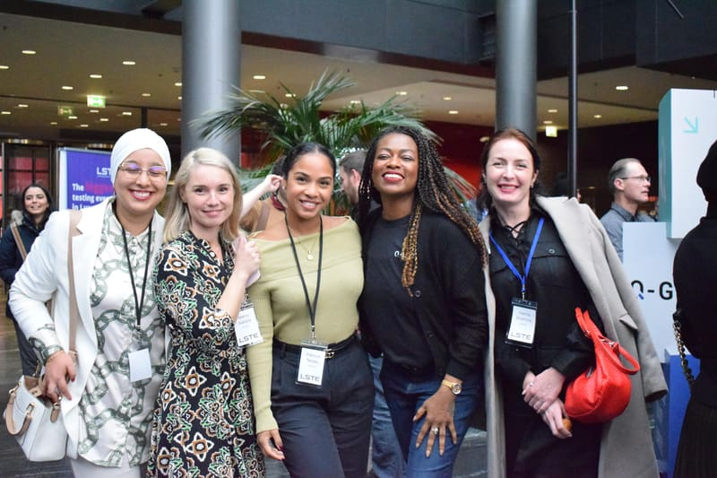
Expert talks, emerging trends and Luxembourg’s testing community: what LSTE 2026 has in store on 26 November.
Read moreCristiano Cunha shares his perspective on the role of human judgement in software testing: “Testing isn’t simply pass or fail.”
Watch on LinkedInJonathan Bernales shares the testing skill he would choose above all others: always finding the edge-case bugs everyone else misses.
Watch interview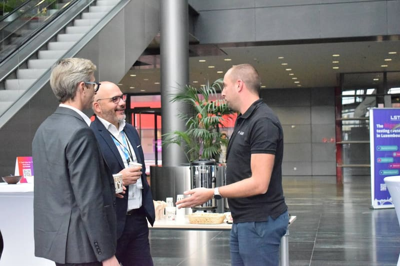
Seven skills that will make QA professionals stand out in 2027, from test automation and AI to communication.
Read moreQuentin Ostertag (Ainos POST Luxembourg) shares his view on what makes LSTE worth attending.
Watch on LinkedIn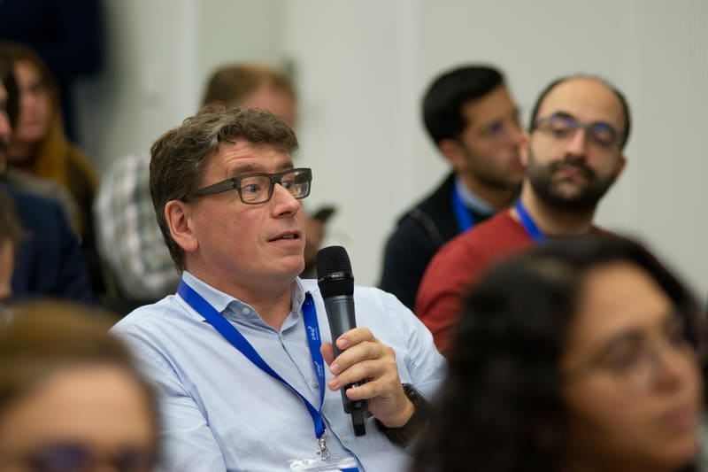
AI, quality engineering, continuous testing and soft skills: the trends that will shape software testing in 2027 and beyond.
Read more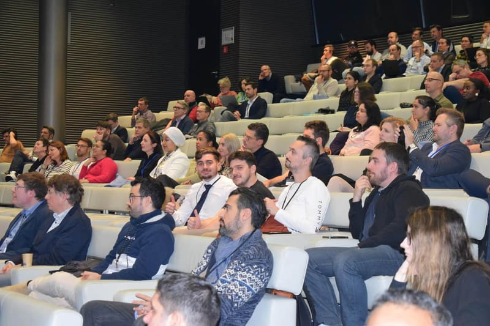
From finding defects at the end to building quality in from the start: how Quality Engineering expands the tester’s role.
Read morePatrícia Neves, Manager IT Software Test & Quality Assurance at Cargolux Airlines, in our LSTE 2025 spotlight series.
Watch on LinkedIn
Women in testing sharing their experience and representing the profession at the 2025 edition.
View on LinkedIn
Test generation, self-healing scripts and smarter defect analysis: what AI really changes in test automation.
Read more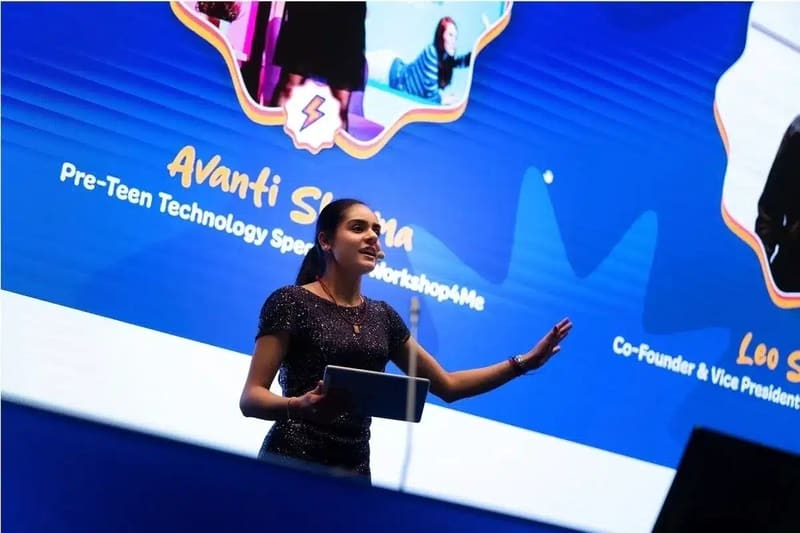
Avanti Sharma will moderate the main panel and act as Master of Ceremonies for this year's edition.
Read more
The 7th edition placed artificial intelligence at the centre of QA and testing discussions in Luxembourg.
Read more
Silicon Luxembourg's press release announcing the return of the Luxembourg Software Testing Event on 27 November 2025 at Hôtel Parc Belle-Vue.
Read article
AI, API automation, continuous testing and cloud platforms: the trends reshaping test automation strategies.
Read more
Why a thriving local testing community helps professionals learn faster and raises quality across Luxembourg’s tech ecosystem.
Read more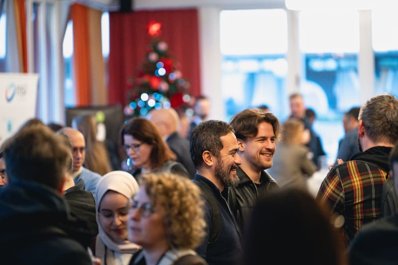
Real-world lessons, new connections and fresh ideas: why attending industry events pays off for your career.
Read more
At LSTE 2024, Dr. Anne Kramer (Smartesting) shared her thoughts on the evolving role of software testers and AI.
Read article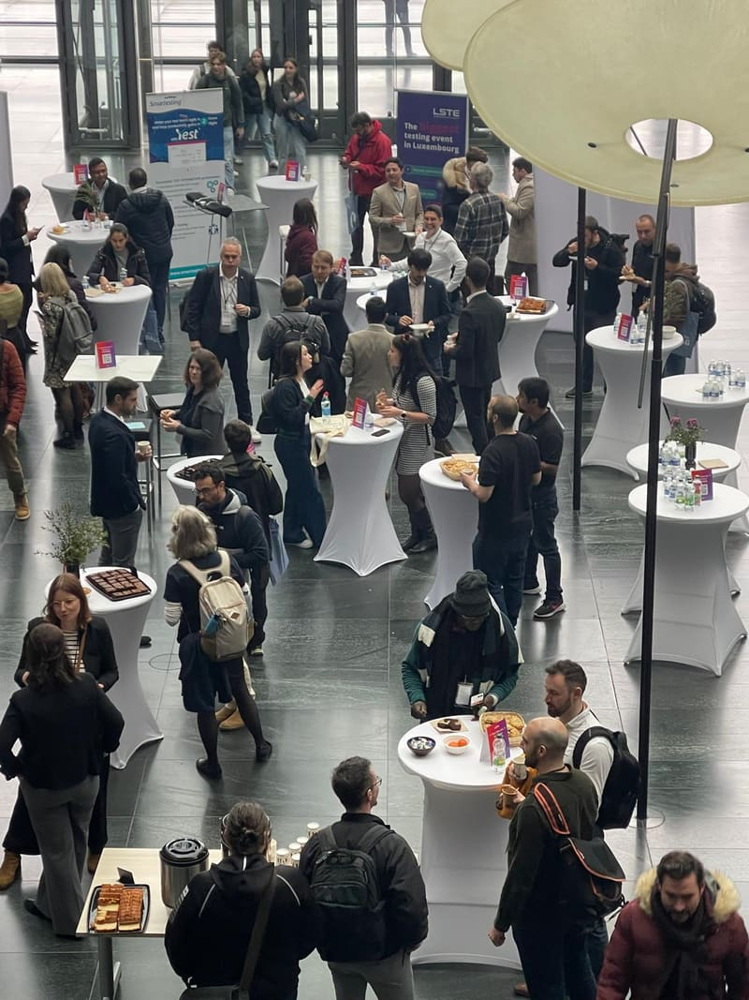
The 6th edition at the Digital Learning Hub in Esch-Belval brought together over 280 professionals.
Read article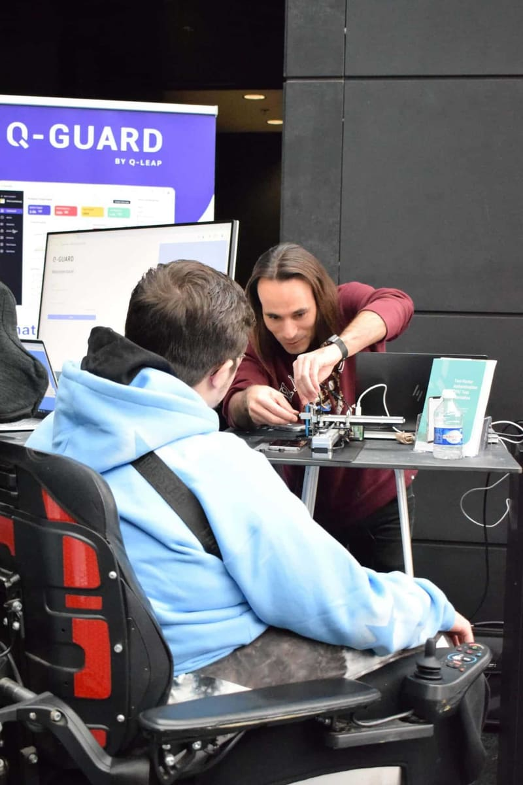
Excellium Services presented on application testing and application security at LSTE 2024, exploring what happens when the two disciplines combine.
Read more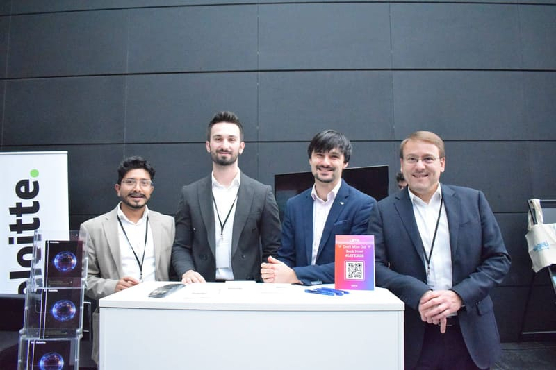
Deloitte announced its role as a silver sponsor of LSTE 2024, held on 14 November in Esch-Belval.
Read more
Sogeti announced its participation as a gold sponsor, presenting a keynote on generative AI in testing.
Read moreWhat to expect at LSTE 2024: morning tutorials, afternoon sessions on automation, AI and application security, and a full speaker line-up.
Read more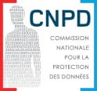
The CNPD, Luxembourg's data protection authority, announced its support for the Luxembourg Software Testing Event 2024 in Esch-Belval.
Read moreAn IT Nation magazine feature on LSTE 2019, on how quality assurance and testing have become increasingly cross-functional activities.
Read article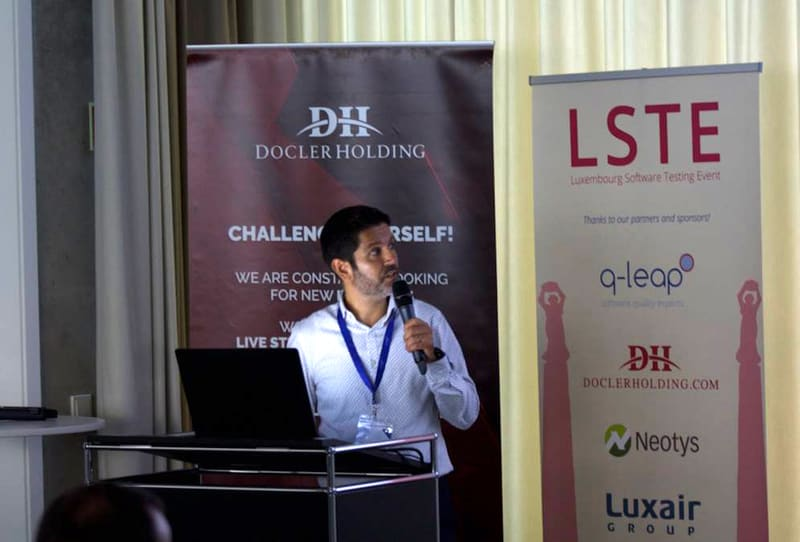
A press release from LSTE's Securitymadein.lu partner covering the Luxembourg Software Testing Event's 2018 edition (#LSTE2018).
Read article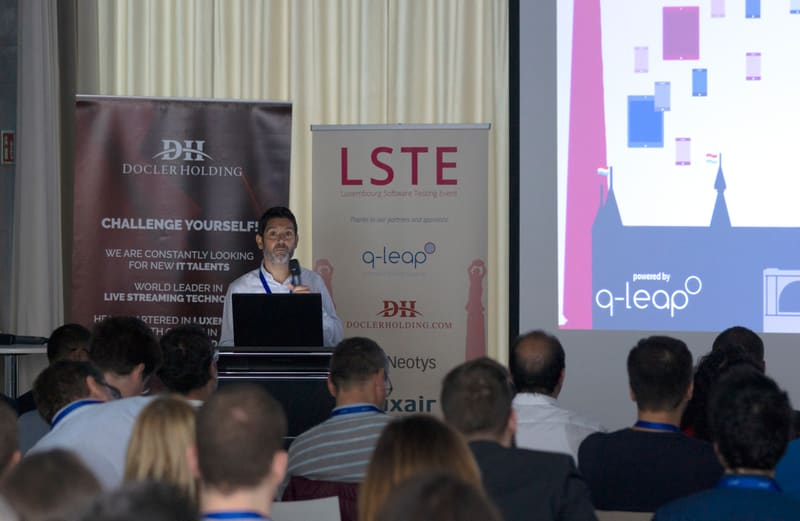
A recap of LSTE 2018's fourth edition at Forum Da Vinci, with testimonials from attendees and speakers from q-leap, Docler Holding, Luxair and Neotys.
Read more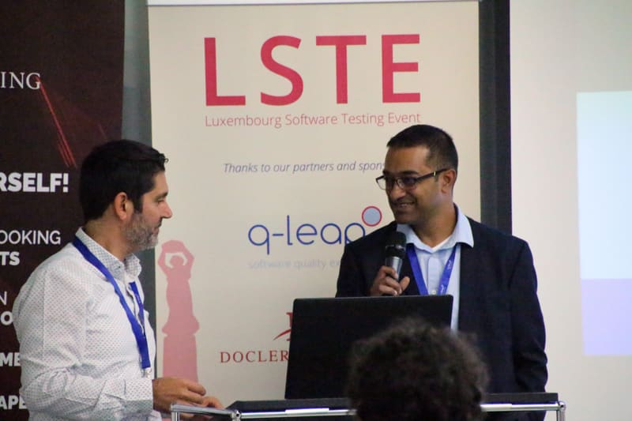
Ahead of LSTE 2018, q-leap's Sylvain Perez on the emerging trends in software testing: AI, automation, and mobile as a Benelux priority.
Read more
Deuxième volet de la série sur les grandes tendances du testing : les enjeux de la protection des données et de la sécurité de l'IoT, à l'occasion de LSTE 2017.
Read more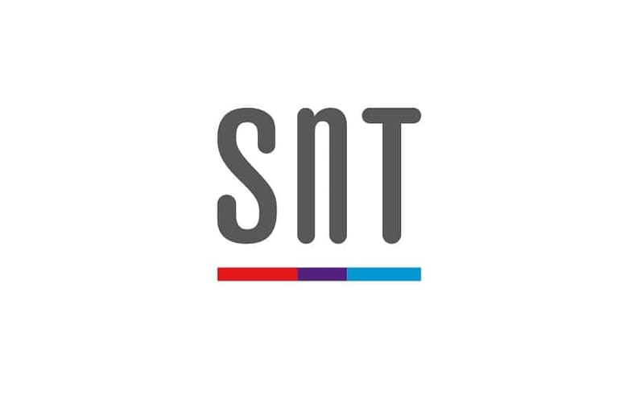
At LSTE 2017, SnT's Software Verification and Validation Lab presented its research on automated security test case generation.
Read more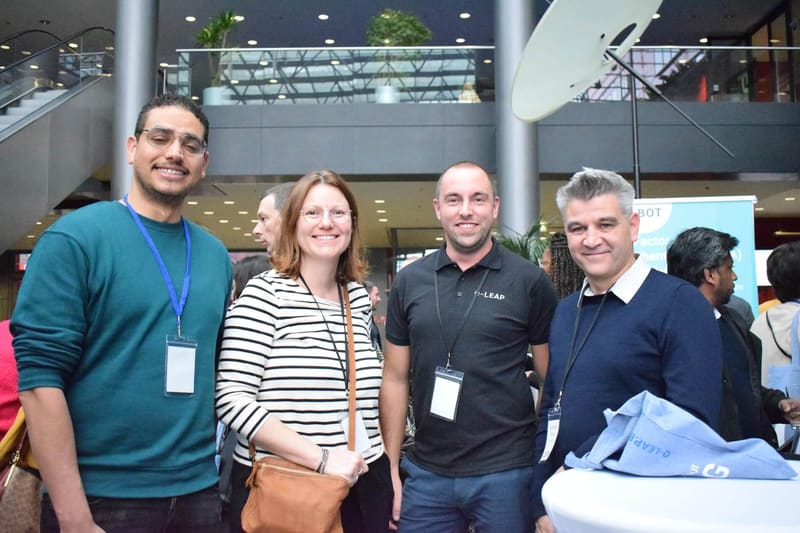
Premier volet de la série sur les grandes tendances du testing : le test mobile et la virtualisation, à l'occasion de LSTE 2017.
Read more
q-leap organised the 3rd edition of the Luxembourg Software Testing Event on 5 October 2017, bringing together testers, developers and IT professionals.
Read more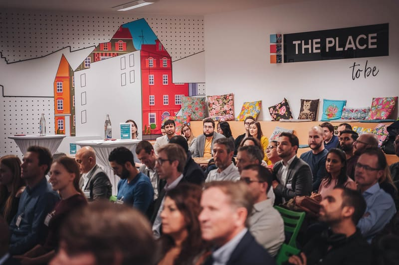
Retour sur la deuxième édition du Luxembourg Software Testing Event, tenue le 6 octobre 2016 au Forum Da Vinci.
Read article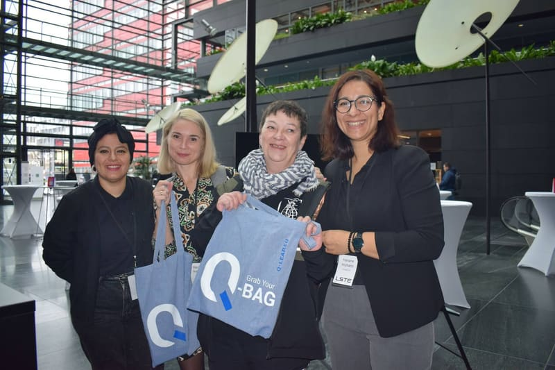
The announcement for the 2nd edition of the Luxembourg Software Testing Event, held on 6 October 2016 at Forum Da Vinci.
Read article